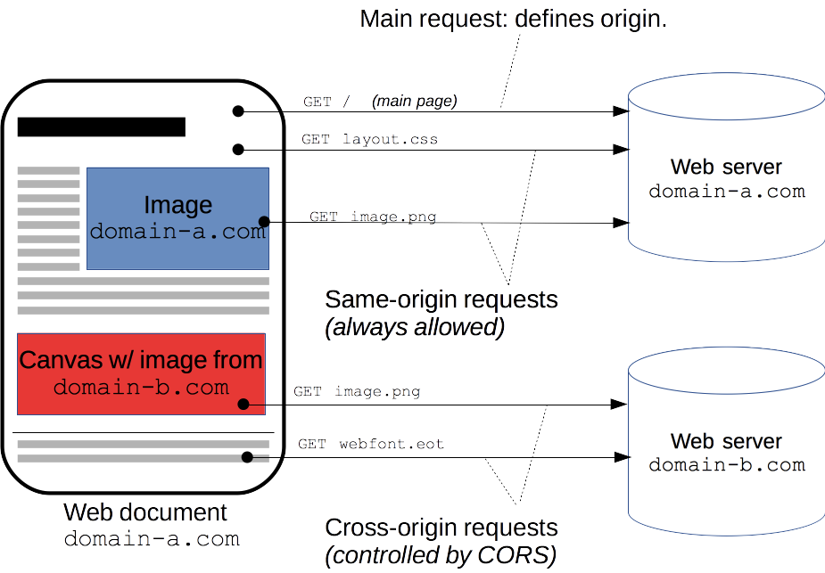
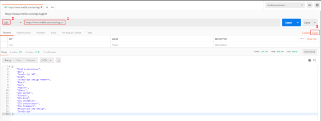
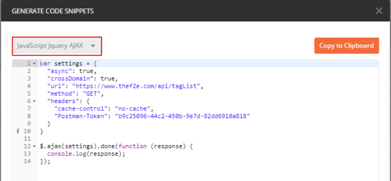
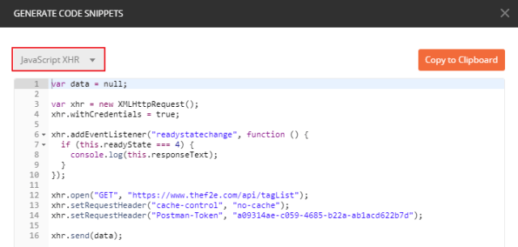
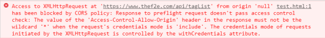
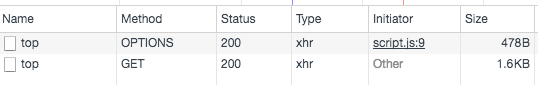

前言
這裡使用 Postman 並使用 六角學院 提供的API進行測試

Postman 可以提供不同語言的code

將 crossDomain 設定為true ， 會在後端表頭自動帶入access-control-allow-origin: * (星號代表全部都可以的意思)

照理來說都可以成功 GET 到資料才對，不過使用 XHR 的方式時卻得到以下回應

Access-Control-Allow-Origin不能設定為 * ，那要設定成甚麼？
XMLHttpRequest.withCredentials
XMLHttpRequest.withCredentials = true時，發現你與呼叫的API的網站 不同源時，瀏覽器一樣會幫你發 Request，但是會把 Response 給擋下來，不讓你的 JavaScript 拿到並且傳回錯誤。
有甚麼用？
跨域請求是否提供憑據信息( cookie、HTTP 認證及客戶端 SSL 證明等)也可以簡單的理解為，當前請求為跨域類型時是否在請求中協帶 cookie
怎麼用?
withCredentials 屬於 XMLHttpRequest 對象下的屬性，可以對其進行查看或配置
1 | var xhr = new XMLHttpRequest(); |
需要注意是，當配置了xhr.withCredentials = true時，必須在 後端 增加 response頭信息 Access-Control-Allow-Origin，且必須指定域名，不能指定為 *
後端設定方法：
1 | res.setHeader(‘Access-Control-Allow-Origin’, 'http://172.19.0.215:3333'); |
結語：
所以當 XMLHttpRequest.withCredentials = true時，除非是在同一個域名下，不然是取不回 response ，XMLHttpRequest.withCredentials 本身預設是 false，把他設定回 false ，即可以取得資料
CORS
跨來源資源共用（Cross-Origin Resource Sharing ( CORS )）是一種使用額外 HTTP 標頭令目前瀏覽網站的使用者代理取得存取其他來源（網域）伺服器特定資源權限的機制。當使用者代理請求一個 — — 例如來自於不同網域（domain）、通訊協定（protocol）或通訊埠（port）的資源時，會建立一個跨來源 HTTP 請求（cross-origin HTTP request）
舉個跨來源請求的例子：http://domain-a.com HTML 頁面裡面一個 <img> 標籤的 src 屬性載入來自 http://domain-b.com/image.jpg 的圖片。現今網路上許多頁面所載入的資源，如 CSS 樣式表、圖片影像、以及指令碼（script）都來自與所在位置分離的網域，如內容傳遞網路（content delivery networks, CDN）
同源政策的確是規範非同源就被擋下來，但與此同時其實又有另外一個規範，是說：「如果你想在不同 origin 之間傳輸資料的話，你應該怎麼做」，這規範就叫做 CORS
這套規範跟你說，如果你想開啟跨來源 HTTP 請求的話，Server 必須在 Response 的 Header 裡面加上Access-Control-Allow-Origin
Preflight Request

咦？我明明只發了一個 Request，怎麼變兩個了？而且第一個的 Method 居然是OPTIONS。只是多加了一個 Header 就多了一個 Request，是為什麼呢？
CORS 把 Request 分成兩種，一種是簡單請求（simple requests）
簡單請求
一個不觸發 CORS 預檢的請求 — — 所謂的「簡單請求（simple requests）」
基本上，只使用 GET、HEAD、POST，且不添加額外的 Header，大部分為 simple requests ，詳細說明請看以下參考
這一個 Request 叫做 Preflight Request，中文翻作「預檢請求」，因為非簡單請求可能會帶有一些使用者資料，因此會先透過 Preflight Request 去確認後續的請求能否送出
如果這個 Preflight Request 沒有過的話，真的 Request 也就不會發送了，這就是預檢請求的目的
我舉一個例子，你就會知道為什麼需要這個 Preflight Request 了
假設今天某個 Server 提供了一個 API 網址叫做：https://example.com/data/16，你只要對它發送 GET，就能夠拿到 id 是 16 的資料，只要對它發送 DELETE，就可以把這筆資料刪除
如果今天沒有 Preflight Request 這個機制的話，我就可以在隨便一個 Domain 的網頁上面發送一個 DELETE 的 Request 給這個 API。剛剛我有強調說瀏覽器的 CORS 機制，還是會幫你發送 Request，但只是 Response 被瀏覽器擋住而已
因此呢，儘管沒有 Response，但是 Server 端的確收到了這個 Request，因此就會把這筆資料給刪除
如果有 Preflight Request 的話，在發送出去收到結果的時候，就會知道這個 API 並沒有提供 CORS，因此真的 DELETE 請求就不會送出，到這邊就結束了
先用一個 OPTIONS 的請求去確認之後的 Request 能不能送出，這就是 Preflight Request 的目的
JSONP
這是跨來源請求除了 CORS 以外的另外一種方法，全名叫做：JSON with Padding
其實有些東西是不受同源政策限制的，例如說<script>這個 Tag，我們不是常常引用 CDN 或是 Google Analytics 之類的第三方套件嗎？網址都是其他 Domain 的，但是卻能正常載入
JSONP 就是利用<script>的這個特性來達成跨來源請求的
今天先想像你有一段 HTML 長這樣：
1 | <script> |
很好懂的一段程式碼，我就不多做解釋了。那如果今天把上面那一段換成一串網址呢？
1 | <script src="https://another-origin.com/api/games"></script> |
如果 https://another-origin.com/api/games 這個網址返回的內容就是剛剛的：
1 | var response = { |
那我不就一樣可以拿到資料了嗎？而且這些資料還是 Server 端控制的，所以 Server 可以給我任何資料。但是這樣用全域變數其實不太好，我們可以借用剛剛的 Callback Function 的概念，改成這樣：
1 | <script> |
實務上在操作 JSONP 的時候，Server 通常會提供一個 callback 的參數讓 client 端帶過去
1 | URL: https://another-origin.com/api/games?client_id=xxx&callback=receiveData&limit=1 |
所以 JSONP 是什麼？JSONP 其實就是透過上面這種形式，利用<script>裡面放資料，透過指定好的 function 把資料給帶回去。你只要把第一段的<script>那邊想成是 Server 的回傳值，你就可以理解了
它就是透過你帶過去的callback這個參數當作函式名稱，把 JavaScript 物件整個傳到 Function 裡面，你就可以在 Function 裡面拿到資料
利用 JSONP，也可以存取跨來源的資料。但 JSONP 的缺點就是你要帶的那些參數永遠都只能用附加在網址上的方式（GET）帶過去，沒辦法用 POST
如果能用 CORS 的話，還是應該優先考慮 CORS
添加 header
To use the API, just prefix the URL with the API URL.
1 | const api = 'http://opendata2.epa.gov.tw/AQI.json'; //要取得的API |
將 corsUrl + api 組合起來
1 | console.log(corsUrl + api) |
向上面這個 Url 發送 request ，可以在 response 標頭添加Access-Control-Allow-Origin : *
範例
1 | (function() { |
- Post title：【CORS】跨來源資源共用CORS
- Post author：Neil Yang
- Create time：2019-06-10 00:00:00
- Post link：https://des86532.github.io/2019/06/10/CORS/cors/
- Copyright Notice：All articles in this blog are licensed under BY-NC-SA unless stating additionally.